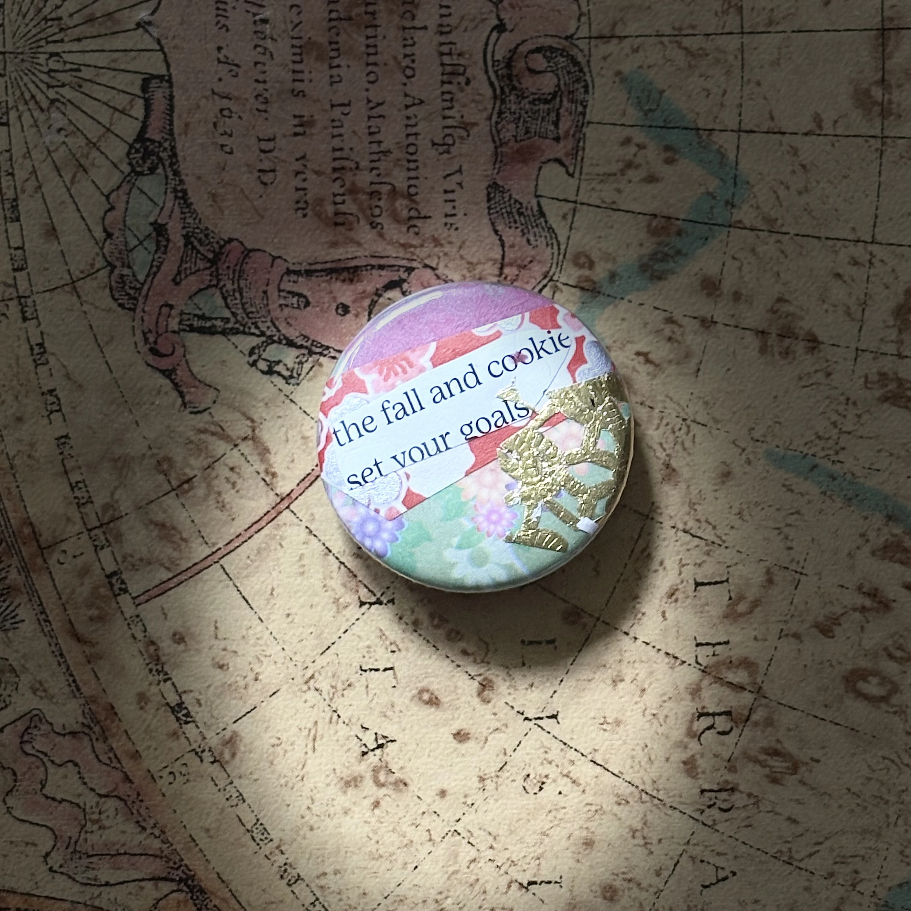

things / no. 00009 · collage pin
date unrecorded
fall and cookie

my second-ever collage pin;
the one that triggered the roachcraft brain train.
created during a gigantic work conference, as a respite from professional networking. the deeper i got into human resources, the more i felt like i was being trained to be a decibel in the manipulative voice of capitalism (hot take).
button-press table activity hosted by a youth-centered art therapy nonprofit up north. their founder is literally one of my favorite humans; a powerhouse of love, light & hope. if you can, please show them some love →
filed under: things